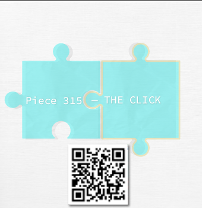

Puzzle Piece
Emotional interaction design exploring alignment, clarity, and resonance.

Role
UX/UI Design
Timeline
3 Weeks
Tools
Illustrator, PS
Context
Academic Project
The Concept
The Challenge
To express emotional resonance without animation, text overlays, or complex interactions. The visual needed to communicate connection using only colour, spacing, and metaphor.
The Approach
Start with missing pieces and misalignments, gradually moving towards a "click." Puzzle pieces became the perfect metaphor for internal alignment—finding where things finally fit.
"A visual journey from not knowing what was missing, to the quiet click of everything falling into place."

Pieces I Didn’t Know Were Missing
The journey begins with emptiness. The layout emphasizes negative space and isolation, representing the unconscious gaps in our emotional landscape.


Behind the Scenes


Reflection
Created under the guidance of Professor Chris, whose reflective feedback shaped the emotional clarity of the final piece. This project taught me that design doesn't always need to "shout" to be effective; sometimes the quietest changes speak the loudest.
Resources & Credits
Design: Michelle Miyata
All other images created by me.